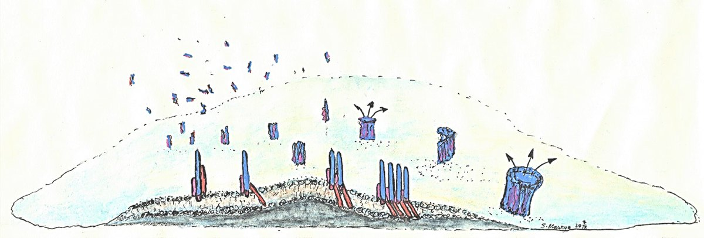

Recent
- Sep 2026 The Awadh Biodiversity Atlas goes online: bilingual draft profiles for 332 species of rural eastern Uttar Pradesh. About the project.
- 2026 Transition-path times of adenylate kinase, measured photon by photon in zero-mode waveguides, presented at the Biophysical Society Annual Meeting. Talk given by M. Shehadeh. Abstract.
- 2026 Three manuscripts in preparation: transition paths in waveguides, transport in crowded membranes, and the assembly pathway of Cytolysin A. Working titles.
- 2024 Abstract at the Biophysical Society Annual Meeting on cholesterol derivatives and Cytolysin A. Abstract.
- Jan 2023 Conformational flexibility and the lytic activity of Cytolysin A, in The Journal of Physical Chemistry B. Paper.
Core Research Themes
Bridging single-molecule optics, nanophotonics, statistical inference, and membrane biophysics.
Zero-Mode Waveguides & Nanophotonics
Overcoming the optical diffraction and concentration barrier using metallic nano-apertures (ZMWs) to study single-molecule interactions at micromolar, physiological concentrations.
Explore methods →
Transition Paths of Conformational Change
Timing the microsecond crossings between protein conformations, starting with an enzyme opening and closing, with plasmon-enhanced smFRET and photon-by-photon analysis.
Read more →
Membrane Biophysics & Pore Formation
Dissecting the oligomerization pathway, conformational plasticity, and cholesterol stabilization of pore-forming toxins (Cytolysin A) on supported lipid bilayers.
View discoveries →Photon-by-Photon Inference & Image Analysis
H2MM, the photon-by-photon hidden Markov method developed in the Gilad Haran Lab, recovers conformational states, rates and transition-path times straight from photon arrival times, with no binning. From my Ph.D.: single-particle tracking and photobleaching-step counting on TIRF movies to measure mobility and oligomer size.
View methods →Awadh Biodiversity Atlas: community natural history Work in progress
An open-access citizen-science project, still in its early stage, to document the overlooked native flora, insects, birds and wetland life of rural eastern Uttar Pradesh, in the Basti and Ayodhya districts. Draft bilingual profiles for more than 330 species so far; field verification, photographs and dated observations from the region are the next stage. Working toward bilingual pictographic field guides and rural school science programmes.